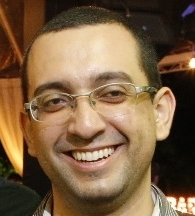
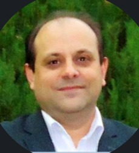
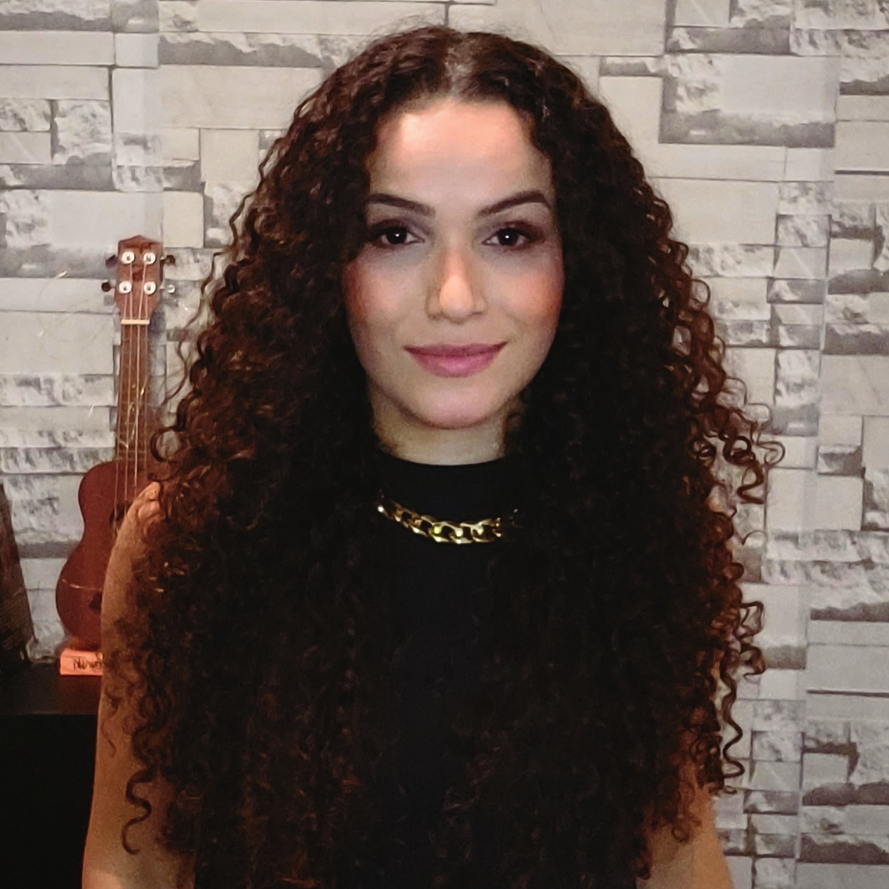
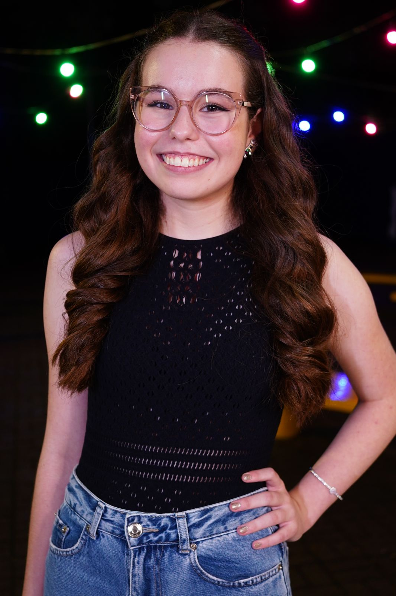
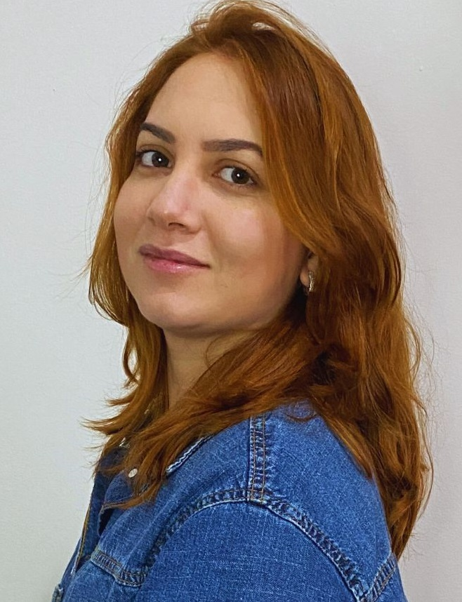
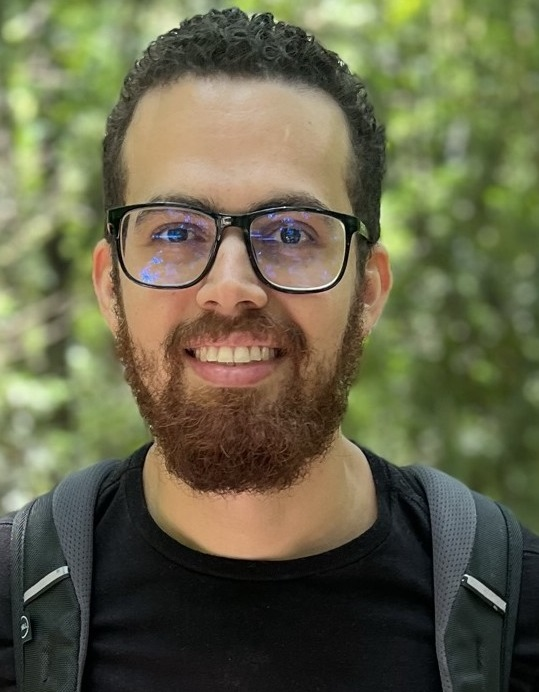
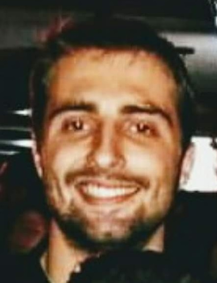
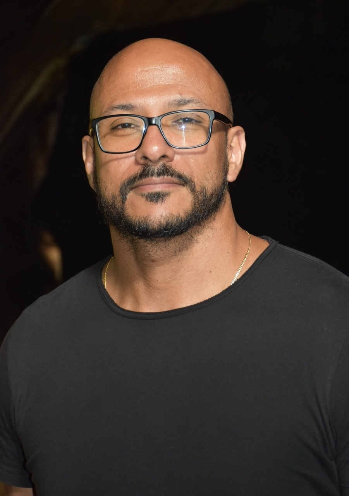

Ph.D. Candidates
 André F. R. Cordeiro. An open science framework for supporting software engineering controlled experiments. Start year: 2021.
 Carlos D. Luz.
Teaching of controlled experimentation in software engineering.
Start year: 2023.
Carlos D. Luz.
Teaching of controlled experimentation in software engineering.
Start year: 2023.
Giovanna C. S. Bettin. Teaching open science for software engineering research. Start year: 2023.
Thais S. Nepomuceno. Registered reports for software engineering. Start year: 2023.
Thiago J. Silva. Formalization of digital forensics controlled experiments. Start year: 2024
Ana C. Maciel (co-advisoring, principal advisor: Igor Steinmahcher, NAU, USA). Analysis of the github discussions role in open source development environments. Start year: 2021.
 Luciano A. Garcia (co-advisoring, principal advisor: Marcelo Morandini, EACH/USP, Brazil). Specification and implementation of M-FATE: a Methodology for the Automatization of Tasks Evaluation. Start year: 2020.
Master's
 Elaine I. Moreira. A reference architecture for digital forensics tools. Start year: 2023.
Carlos E. A. Moreno. Pentest in the State University of Maringá's IT infrastructure. Start year: 2024.
Vinicius E. Ferreira. Cybersecurity awareness education and training. Start year: 2024.
Gabriela S. Rosa. Artificial intelligence impact in open science practices. Start year: 2024.
Ana B. M. Bett. Open science panorama of software engineering secondary studies. Start year: 2024.
Scientific Initiation (PIBIC, PIC) / Technology Development and Innovation Initiation (PIBITI)
 Yasmin B. Danielli. A conceptual model for feminicide in the forensics psychology context. (PIBIC/INCT Forense). Start year: 2023.
Filipe A. Santana. Computing Solution for Processing Software Engineering Controlled Experiments. (PIBIC). Start year: 2023.
Ana H. Mazur. Empirical evaluation of the ExperDF-Onto ontology using SPARQL queries for digital forensics experiments. (PIBIC). Start year: 2023.
Fernando S. Grande. A web portal for teaching and practice of software engineering controlled experimentation - Phase 1. (PIBITI). Start year: 2023.
Bachelor's Final Project (TCC)
 Larissa Z. Morais. Microservices architectural panorama. Start year: 2024.
Vinícius Schmitz. Digital forensics tools instantiation into a reference architecture. Start year: 2024.
Kamylla B. Felipin (co-advisoring, principal advisor: Lilian Scatalon, UEM, Brazil). Integrating software testing into the teaching of programming. Start year: 2024.
Carlos E. Silva (co-advisoring, principal advisor: Lilian Scatalon, UEM, Brazil). On the capability of software developers to design test cases. Start year: 2024.
Davi.... (co-advisoring, principal advisor: Lilian Scatalon, UEM, Brazil). On the capability of software developers to automate the design of test cases. Start year: 2024.
Samuel F. Amboni (co-advisoring, principal advisor: Lilian Scatalon, UEM, Brazil). On the capability of software developers to design test cases. Start year: 2024.
William D. S. Vernaschi (co-advisoring, principal advisor: Lilian Scatalon, UEM, Brazil). Assessing technologies and methodologies for the testing of graphical applications. Start year: 2024.
Gabriel B. Medeiros (co-advisoring, principal advisor: André F. R. Cordeiro, UEM, Brazil). Open science practices for open source software. Start year: 2024.
Former Ph.D. Students
none so far....
Former Master's Students
Thiago O. Silva. ExperDF-Onto: an ontology for supporting digital forensics controlled experiments. (Master's Degree). Defense: 2023
Giovanna C. S. Bettin. SMartyPerspective: a perspective-based inspection technique for SMarty software product lines. (Master's Degree). Defense: 2021.
Carlos D. Luz.
A conceptual model for supporting the teaching of software engineering controlled experiments.
(Master's Degree).
Defense: 2021.
 Henrique Vignando. OntoExper-SPL: an ontology for software product line controlled experiments. (Master's Degree). Defense: 2020.
Thais S. Nepomuceno. Experimental evaluation of the SMarty approach in the configuration and product generation perspective. (Master's Degree). Defense: 2020.
 Leandro F. Silva. Empirical evaluation of VMTools-RA: a reference architecture for software variability. (Master's Degree). Defense: 2020.
Kleber L. Petry. SMartyTesting: a model-based approach for testing SMarty software product lines. (Master's Degree). Defense: 2019.
Luciano A. Garcia. The SCRUM Framework for software development projects: literature and industry systematic analysis. (Master's Degree). Defense: 2019.
Marcus V. Bertoncello (co-advisoring, principal advisor: Igor Steinmahcher, NAU, USA). Strategy patterns for reducing barriers faced by newcomers in open source projects. (Master's Degree). Defense: 2019.
Andre F. R. Cordeiro. SMartyMetrics: a 25010 ISO/IEC contribution in the perspective of software product line maintainability. (Master's Degree). Defense: 2018.
Viviane R. Furtado. Guidelines for quality evalaution of controlled software product line experiments and quasi-experiments. (Master's Degree). Defense: 2018.
Anderson G. Neira (co-advisoring, principal advisor: Igor Steinmahcher, NAU, USA). An exploratory study on the motivation and behavior of crowdsourcing software developers. (Master's Degree). Defense: 2018.
Maicon Pazin. Empirical studies on the SMartySPEM approach for managing variability in software process lines. (Master's Degree). Defense: 2017.
Ana P. Allian. VMTools-RA: a reference architecture for software variability tools. (Master's Degree). Defense: 2016.
Marcelo C. B. Santos (co-advisoring, principal advisor: Thelma E, Colanzi, UEM, Brazil). A search-based evaluation model for product-line architecture design. (Master's Degree). Defense: 2016.
Jaime William Dias. Empirical evidence of compositional and annotative approaches for software process line variability management. (Master's Degree). Defense: 2016.
Marcio H. G. Bera (Co-advisored by Thelma E. Colanzi, UEM, Brasil). SMartyComponents: a UML-based product-line architecture specification process. (Master's Degree). Defense: 2015.
Ricardo Theis Girardi. SMartyCheck: a checklist inspection technique for SMarty-based software product line use case and class diagrams. (Master's Degree). Defense: 2015.
Douglas F. Toledo (Originally advisored by Sérgio R. P. Silva - in memoriam). idAuthority: a cognitive authority identification model for social networks. (Master's Degree). Defense: 2015.
Emanuel F. Duarte (Originally advisored by Sérgio R. P. Silva - in memoriam). Dico: a conceptual model for advanced search resources in exploratory searching. (Master's Degree). Defense: 2015.
 Anderson S. Marcolino. Experimental evaluation of the SMarty approach for software product line variability management. (Master's Degree). Defense: 2014.
Vanderson H. Fragal (co-advisoring, principal advisor: Itana M. S. Gimenes, UEM, Brazil). Application engineering for embbedded systems: tranforming SysML specifications into Simulink. (Master's Degree). Defense: 2013.
Former Scientific Initiation Students (PIBIC, PIBITI, PIC)
Filipe A. Santana (Co-advisored by André F. R. Cordeiro). Metadata standards for software engineering controlled experiments. Year: 2022-2023.
José R. S. Hermoso. Interoperability of the SMartyModeling environment with feature modeling tools. Year: 2021-2022.
Henrique F. M. Luiz. Design and implementation of a feature modeling module for the SMartyModeling environment. Year: 2019-2020.
Pedro H. M. Costa. A comparative analysis of open data sharing repositories for software engineering experiments. Year: 2019-2020.
Natália Ramalho Lopes (Co-advisored by Ademir Constantino). A supporting system for prdagogical distribution of professors' workload. Year: 2019-2020.
Vinicius de Oliveira Monteiro. SMartyModeling-Trace: an artifact traceability module for UML-based software product lines. Year: 2019-2020.
Amanda Tiemi Fukao. Literature analysis on requirements engineering for digital forensics tools. Year: 2019-2020.
Pedro H. M. Costa. Specification of a trusted repository for software engineering experiments. Year: 2018-2019.
José V. R. Galbardi. EgressoUEM - Graduate Progam module: an app for managing former students of UEM. Year: 2018-2019.
Renan A. Leonel. SMartyRequirements: a requirements module for the SMartyModeling environment. Year: 2018-2019.
Leandro F. Silva. SMartyAnalyzer: an environment for the application of SMM metrics in software product-line architecture evalaution. Year: 2018-2019.
Mateus H. Taroda. SMartyCheckTool: a tool for detecting and removing defects from software product lines SMarty models. Year: 2016-2017.
Lailson M. Tofanelli. Designing software product-line architecture metrics in the Structured Metrics Metamodel standard. Year: 2016-2017.
Fernando L. Todão. Identification and mapping of architectural styles/patterns and variability in systems of systems. Year: 2016-2017.
Mateus H. Taroda. A system to support decision-making for professors' pedagogical workload distribution. Year: 2016-2017.
Filipe G. Genu. Quality evaluation of software engineering experiments. Year: 2015-2016.
Luiz T. Nakahara Junior. An automated module for Java software product line code generation from UML models with variability. Year: 2014-2015.
André F. R. Cordeiro. Study and application of software product-line architecture evaluation metrics to the SystEM-Env environment. Year: 2013-2014.
Lailson M. Tofanelli (Co advisoring, Principal advisor: Itana M. S. Gimenes). Computing support for managing CVL variability in software product lines. Year: 2013-2014.
André Felipe Ribeiro Cordeiro. A SystEM-Env planning module for software product-line architecture evaluation. Year: 2012-2013.
Former Bachelor's Final Project (TCC) Students
Ana B. M. Bett. Open Science Framework for guideline-based documentation of software engieering controlled experiments. Defense: 2024.
Henrique F. M. Luiz. An open peer review system - Phase II. Defense: 2024.
Leonardo D. Souza. Development empirical and evaluation of the SISAV-UEM interface in the students' perspective. Defense: 2024.
Gustavo R. Wanke. Digital forensics experimental data sharing. Defense: 2023.
Matheus A. Pereira. Design and development of an open peer review supporting tool - Phase I. Defense: 2023.
Pedro C. Chagas. Applying Domain-Driven Design for the payment domain. Defense: 2023.
Pedro H. M. Costa. A supporting system to daily emotional records. Defense: 2022.
Felipe D. Tomás. How chain of custody has been implemented with blockchain technologies: a review. Defense: 2022.
Danillo D. Nascimento. A survey on open science in the State University of Maringá. Defense: 2021.
Mateus H. A. Soares. How requirements engineering has been performed in souther Brazil companies: a survey. Defense: 2021.
Evandro F. Estima. An API for integrating Moodle and students control system of UEM. Defense: 2021.
Bruno Fernandes. Usability evaluation and exploratory tests in the SMartyModeling environment. Defense: 2020.
Diogo A. Almeida. Portando o Sistema de Censo Superior da UEM para a Plataforma Web. Defense: 2019.
Leandro F. Silva. SMartyModeling: an Eclipse Modeling Framework-based UML modeling environment for software product lines. Defense: 2017.
Gabriel Zassin. RelationalToGraph: relational models migration for NoSQL graph-oriented databases. Defense: 2016.
Victor L. Pupim. SisGRUEM: a system to support waste management of the State University of Maringá. Defense: 2016.
Lailson M. Tofanelli. Specification of software product-line architectures based on the Structured Metrics Metamodel. Defense: 2016.
Fernando L. Todão. Identification and mapping of architectural styles/patterns and variability in systems of systems. Defense: 2016.
André F. R. Cordeiro. A data analysis and documentation module for the SystEM-Env environment for software product-line architecture evaluation. Defense: 2014.
Diego S. M. Rodrigues. Experimental evaluation of extensibility metrics for software product-line architectures: an internal replication. Defense: 2013.
Diogo C. Pereira. A SMarty model-based inspection technique proposal for software product lines. Defense: 2013.
Marcelo T. Hundzinski. Applying the CVL language to the Arcade Game Maker software product line. Defense: 2013.
Bruna S. Biazzi. Delivering CMMI level 3 in a software house: a case study. Defense: 2013.
Aline C. G. Dumalak. Prototyping a software product line evalaution module according to the SystEM-PLA method. Defense: 2012.
Maicon Giovane Pazin. SMartySPEM: an extension of the SPEM approach for managing variability in software product lines. Defense: 2012.